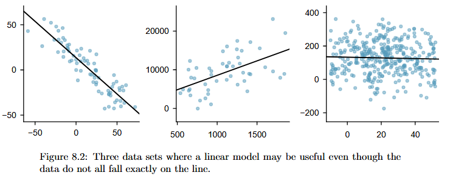
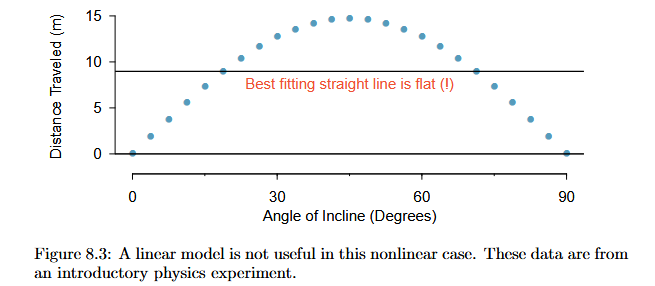
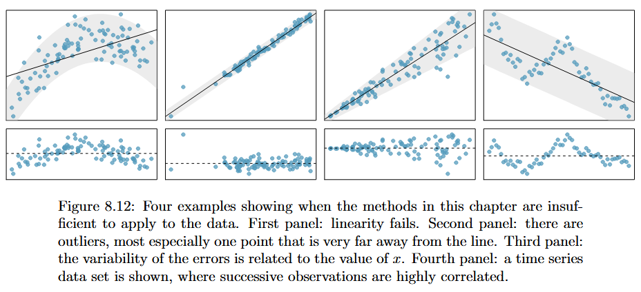

Linear regression is the statistical method for fitting a line to data where the relationship between two variables, \(x\) and \(y\), can be modeled by a straight line with some error
\(\beta_0\) = y-intercept
\(\beta_1\) = slope
\(\epsilon\) = error term (a.k.a residual)
\[
y = \beta_0 + \beta_1 x + \epsilon
\]
When we use \(x\) to predict \(y\), we usually call:
\(x\) the explanatory, predictor or independent variable,
\(y\) the response or dependent variable


Example 1: Opposums…?
## read in datax <-read.csv("data/opossum.csv")head(x)
site pop sex age head_l skull_w total_l tail_l
1 1 Vic m 8 94.1 60.4 89.0 36.0
2 1 Vic f 6 92.5 57.6 91.5 36.5
3 1 Vic f 6 94.0 60.0 95.5 39.0
4 1 Vic f 6 93.2 57.1 92.0 38.0
5 1 Vic f 2 91.5 56.3 85.5 36.0
6 1 Vic f 1 93.1 54.8 90.5 35.5
## linear regressionlm1 <-lm(head_l ~ total_l, x)coefficients(lm1)
(Intercept) total_l
42.7097931 0.5729013
The slope describes the estimated difference in the y variable if the explanatory variable x was one unit larger.
0.57 (cm?) larger opossum skull for every 1 (cm?) increase in height, on average
The intercept describes the average outcome of y if x = 0 and the linear model is valid all the way to x = 0 (which in many applications is not the case!)
## range of outcomessummary(x$total_l)
Min. 1st Qu. Median Mean 3rd Qu. Max.
75.00 84.00 88.00 87.09 90.00 96.50
Normal residuals: Generally, the residuals must be nearly normal. When this condition is found to be unreasonable, it is usually because of outliers or concerns about influential points
Constant variability: The variability of points around the least squares line remains roughly constant
Independent observations: Be cautious about applying regression to time series data, which are sequential observations in time such as a stock price each day

Example 2: Elmhurst College
## read in datax <-read.csv("data/elmhurst.csv")head(x)
## beta1 and beta0b0 <-coefficients(lm2)[1]b1 <-coefficients(lm2)[2]# plot x and yplot(x$family_income, x$gift_aid,xlab ="Family Income (per $1k)",ylab ="Gift Aid (per $1k)",cex.axis =1.25, cex.lab =1.5)abline(lm2, lwd =2)legend("topright",legend ="Line of Best Fit",lwd =2, cex =1.25, bty ='n')